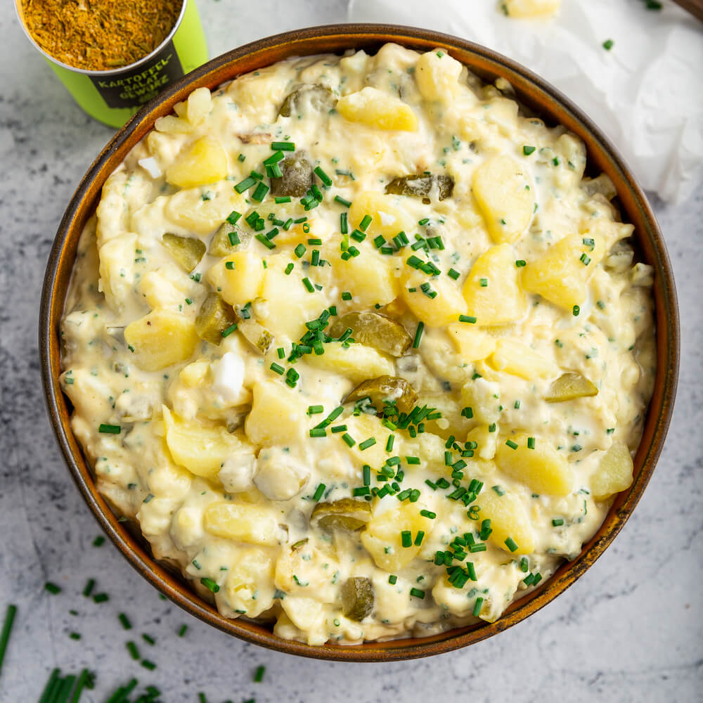

Warum regional und saisonal kochen?
Jahreszeitlich kochen hilft der Umwelt, spart CO₂ und schmeckt besser!
🌟 Rezept der Woche
Kartoffelsalat mit Kräutern
Leckere, klimafreundliche Rezepte aus deiner Region!
Jahreszeitlich kochen hilft der Umwelt, spart CO₂ und schmeckt besser!
Kartoffelsalat mit Kräutern